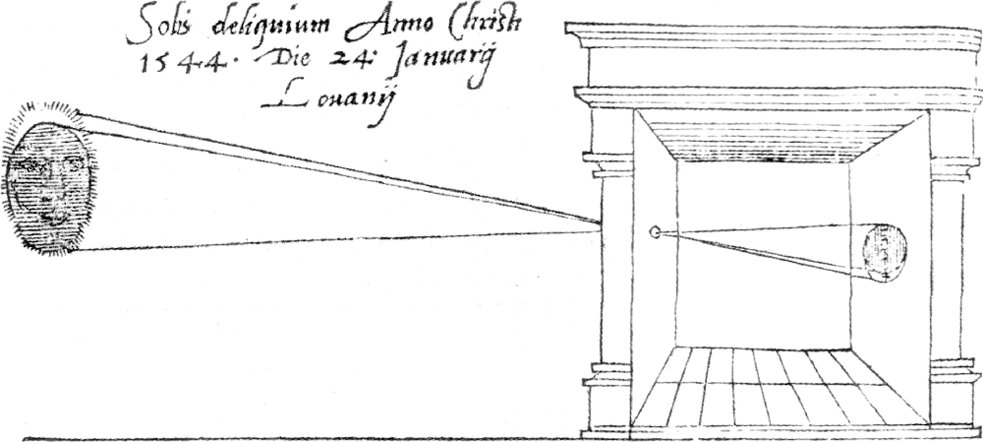
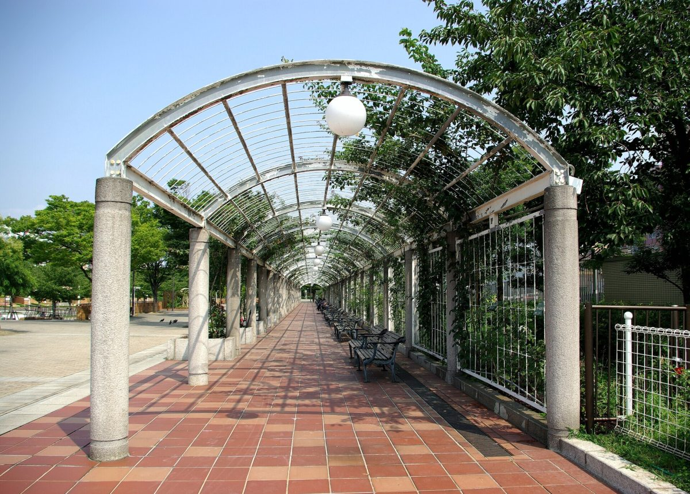
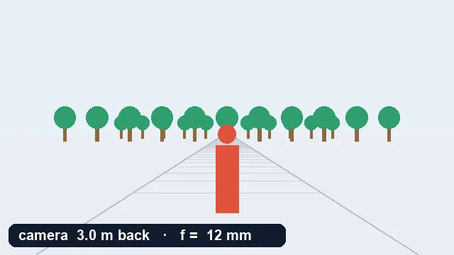
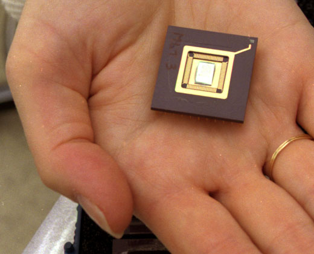

Session 2 · Image formation & sensing
Where doesan image
From a 3D scene to a grid of numbers
A hole in a dark box already makes a picture
🇹🇭 คาบ 2 ต่อจากคาบ 1 ในวันเดียวกัน — พักสั้น ๆ แล้วเริ่ม
🇬🇧 Session 2 follows session 1 on the same day — short break, then start.
Today
One question, four parts
The question How does a camera turn a 3D scene into numbers — and what does it lose on the way?
Each part ends in the same notebook — lab.ipynb, one section per part.
🇹🇭 อ่านคำถามของคาบ แล้วบอกว่าวันนี้เริ่มที่ A
🇬🇧 Read the session question; today starts with A.
A
Pinhole & perspective
Why do far things look small — and where does depth go?
By the end of this part Compute where a 3D point lands on the image, and explain why depth is lost.
🇹🇭 หน้าเปิด topic: อ่านคำถามของ part แล้วเข้าเนื้อหา
🇬🇧 Part opener: read the question for this part, then go in.
A · Pinhole & perspective
An image is a grid of numbers — where do they come from?
Session 1: this “N” is 144 numbers, 0 = black … 255 = white.
Each number measures how much light reached one spot.
So first: how does light from a 3D scene land on a flat surface in an orderly way?
🇹🇭 ถามห้อง: ตัวเลขแต่ละตัววัดอะไร? (แสงที่ตกลงตรงนั้น)
🇬🇧 Ask: what does each number measure? (the light that landed there)
A · Pinhole & perspective
A hole in a dark box makes a picture
pinhole scene dark box image, upside down
pinhole camera กล้องรูเข็ม a dark box with one small hole — no lens
Light travels in straight lines . Each point of the tree sends one ray through the hole.
The rays cross at the hole, so the picture on the back wall is upside down .
🇹🇭 กด → สองครั้ง: รังสี แล้วภาพกลับหัว · ถาม: ทำไมกลับหัว? (รังสีไขว้กันที่รู)
🇬🇧 Press → twice: rays, then the flipped image. Ask: why upside down? (rays cross at the hole)
A · Pinhole & perspective
People have watched the sky this way for 500 years

Gemma Frisius, 1545 · public domain
The solar eclipse of 24 January 1544 , drawn by Gemma Frisius — the first published picture of a camera obscura .
A hole in one wall, the sun’s image on the other: the dark box of the last slide, as big as a room.
Still the safe way to watch an eclipse: a pinhole projector — never look at the sun directly.
🇹🇭 ภาษาละตินบนภาพ: Solis deliquium = สุริยุปราคา · 1544 · 24 มกราคม · Lovanii = เมือง Leuven · ชวนคุย: ใครเคยดูสุริยุปราคาด้วยรูเข็ม?
🇬🇧 The Latin reads: solar eclipse, 1544, 24 January, Leuven. Ask: who has watched an eclipse through a pinhole?
A · Pinhole & perspective
Big hole: blurry. Small hole: dark.
Drag the hole size.
A wider hole lets in more light — the area grows with the square of the width.
But every scene point now lands as a disc , not a dot, and the discs blur together.
A lens gets both — bright and sharp. That is part B.
🇹🇭 ลากจาก 1 mm ไปเล็กสุด (มืด) แล้วไปใหญ่สุด (เบลอ) · twice the width = 4× light
🇬🇧 Drag from 1 mm to smallest (dark), then largest (blurry). Twice the width = 4× the light.
A · Pinhole & perspective
Two similar triangles give the formula
X object height · Z its distancef hole to image plane · x image height
Same angles, so the sides keep the same ratio:
$$\frac{x}{f}=\frac{X}{Z}\;\Rightarrow\; x=f\,\frac{X}{Z}$$
We drop the minus sign of the flip — size is what matters here.
🇹🇭 กด → ทีละชั้น: รังสี → สามเหลี่ยมฝั่งวัตถุ → ฝั่งภาพ+สูตร · ย้ำ: มุมเท่ากัน อัตราส่วนด้านเท่ากัน
🇬🇧 Press → layer by layer: ray, object triangle, image triangle + formula. Same angles, same side ratios.
A · Pinhole & perspective
Twice as far, half as big
image plane f
Worked example · f = 50 mm, X = 1.8 m
Z = 10 m → x = 50 × 1.8 ÷ 10 = 9 mm
Z = 20 m → x = 50 × 1.8 ÷ 20 = 4.5 mm
🇹🇭 ลาก Z จาก 10 ไป 20: ภาพเหลือครึ่ง · ถาม: ถ้าไป 40 m ล่ะ? (2.25 mm)
🇬🇧 Drag Z from 10 to 20: the image halves. Ask: at 40 m? (2.25 mm)
A · Pinhole & perspective
Try it: how tall is the car on the image?
Try it A car is
1.5 m tall and
30 m away. The camera has
f = 50 mm .
How tall is the car on the image plane? The car drives to 15 m . Now? Answer 1. x = 50 × 1.5 ÷ 30 = 2.5 mm · 2. x = 50 × 1.5 ÷ 15 = 5 mm — half the distance, twice the size.Use x = f · X / Z .
Keep the units: f in mm, X and Z in m — the metres cancel, the answer is in mm.
🇹🇭 ให้เวลา 1 นาที · แบบนี้คือรูปแบบข้อสอบ Final (เปลี่ยนตัวเลข)
🇬🇧 Give one minute. This is the final-exam format, with other numbers.
A · Pinhole & perspective
Parallel lines meet at one point
vanishing point horizon
The rails stay 1.5 m apart all the way.
But as Z grows, f·X/Z shrinks toward 0 — so on the image the gap closes.
Every set of parallel lines meets at its own vanishing point . Lines on the ground meet on the horizon .
🇹🇭 ชี้ราง: ห่างเท่าเดิมในโลกจริง แต่บนภาพแคบลงตาม 1/Z · กด → ให้เห็นเส้นขอบฟ้า
🇬🇧 Point at the rails: constant gap in the world, shrinking as 1/Z on the image. Press → for the horizon.
A · Pinhole & perspective
In a real photo, a program can find that point

Tennoji Park, Osaka · photo: Laitche, public domain
The pergola’s edges are parallel in the world. On the photo they all aim at one spot.
Show the lines a program found
OpenCV found 73 straight edges; 37 of them pass within about 1% of the image width of one point — the vanishing point .
The recipe: edges (session 3) → straight lines → the point most lines agree on (RANSAC, session 6).
🇹🇭 กดปุ่มสลับภาพ · เส้นเหลือง = ที่ OpenCV เจอ · เส้นแดง = ต่อไปถึงจุดรวม
🇬🇧 Press the button: yellow = segments OpenCV found, red = their extensions to the common point.
A · Pinhole & perspective
A photo cannot tell near-and-small from far-and-big
1 m tall 5 m away 2 m tall 10 m away 4 m tall 20 m away 10 mm
All three give the same image : only the ratio X / Z reaches the camera. One whole dimension — depth — is lost. It is how “holding up the Leaning Tower” photos work.
🇹🇭 กด → ทีละวัตถุ แล้วภาพเดียวกัน · ถาม: ถ้าเห็นแค่ภาพ บอกได้ไหมว่าอันไหนจริง?
🇬🇧 Press → for each object, then the shared image. Ask: from the image alone, which one is it?
A · Pinhole & perspective
Depth is lost — later, we win it back
Session 7 · Two cameras Two views of the same point disagree a little. That disagreement measures depth.
Assignment T7 · One photo + a model A network trained on many scenes learns to guess depth from a single image.
x = f · X / Z — far things shrink, parallel lines meet, and depth is lost.
project a cube, draw the vanishing point
More practice · Session 2 A — practice bank with worked solutions →
Next · B: a lens makes the picture bright and sharp at once.
🇹🇭 สรุป A ด้วยกล่อง key idea แล้วต่อ B
🇬🇧 Wrap up A with the key-idea box, then go on to B.
B
Lenses
How can a picture be bright and sharp at once?
By the end of this part Explain how focal length sets the field of view, and how the aperture sets depth of field.
🇹🇭 หน้าเปิด topic: อ่านคำถามของ part แล้วเข้าเนื้อหา
🇬🇧 Part opener: read the question for this part, then go in.
B · Lenses
A lens gathers a cone of light into one point
Part A’s trade-off: a small hole is sharp but dark; a big hole is bright but blurry.
A lens lets many rays from one point in — so the image is bright .
Glass bends them to meet at one point again — so the image is sharp .
🇹🇭 ย้อนหน้า 5 (รูเข็ม) แล้วกด → สองครั้ง: รังสีหลายเส้นเข้า → มารวมที่จุดเดียว
🇬🇧 Recall slide 5, then press → twice: many rays in, one point out.
B · Lenses
Parallel rays meet at the focal point
focal point f light from far away arrives parallel
focal length f ทางยาวโฟกัส lens to the point where parallel rays meet
Light from a far scene arrives almost parallel, so its image forms about f behind the lens.
That is why part A’s formula still works with a lens: x = f · X / Z .
🇹🇭 เน้น: กล้องที่ถ่ายของไกล ภาพเกิดที่ระยะ f → สูตรเดิมของ A ใช้ต่อได้
🇬🇧 Stress: for distant scenes the image sits at f, so part A's formula carries over.
B · Lenses
Longer focal length, narrower view
what the camera sees · photo counts as 12 mm
$$\text{FOV}=2\arctan\frac{w}{2f}$$
🇹🇭 ลาก f: 18 mm = มุมกว้าง (90°) · 50 mm ≈ ตาคน · 200 mm = tele ซูม · w = ความกว้าง sensor
🇬🇧 Drag f: 18 mm is wide (90°), 50 mm is close to the eye, 200 mm is a zoom. w is the sensor width.
B · Lenses
Try it: how wide does the camera see?
Try it A sensor is
36 mm wide.
With f = 18 mm , what is the field of view? Which f gives a 60° view? (tan 30° ≈ 0.58) Answer 1. w / 2f = 36 / 36 = 1 → arctan 1 = 45° → FOV = 90° · 2. half-angle 30°: 36 / 2f = 0.58 → f = 18 / 0.58 ≈ 31 mm .Use FOV = 2 · arctan(w / 2f) .
Work with the half-angle : tan(FOV / 2) = w / 2f.
In the exam the numbers are chosen so the angle is one you know — 30°, 45°, 60°.
🇹🇭 ให้เวลา 1–2 นาที · ข้อ 2 ต้องคิดย้อนจากมุม
🇬🇧 Give one to two minutes; question 2 works backwards from the angle.
B · Lenses
Walk back and zoom in: the subject stays, the world changes

rendered with x = f·X/Z by a short Python program
The camera moves back from 3 m to 18 m while f grows from 12 to 72 mm .
f / Z of the person stays the same — so the person stays the same size.
The trees are much farther away: their Z barely changes, so the longer f makes them grow. Film makers call it a dolly zoom .
🇹🇭 ภาพเคลื่อนไหววนเอง · ชี้คน (ขนาดคงที่) เทียบต้นไม้ (ใหญ่ขึ้น) · เทคนิคนี้รู้จักจากหนัง Vertigo (Hitchcock, 1958)
🇬🇧 The animation loops. Point at the person (constant) versus the trees (growing). Known from Hitchcock's Vertigo (1958).
B · Lenses
Only one distance is perfectly sharp
sensor in focus nearer a disc — blur
A lens focuses one distance : those points land as points.
A nearer (or farther) point lands as a disc — the blur circle . Wider lens opening, bigger disc.
🇹🇭 ชี้เส้นเขียว (โฟกัส = จุด) แล้วกด → เส้นแดง (ใกล้กว่า = วง)
🇬🇧 Point at the teal rays (in focus, a point), then press → for the red ones (nearer, a disc).
B · Lenses
A smaller aperture: more in focus, less light
Drag the aperture — the camera focuses at 2 m .
A smaller opening makes every blur circle smaller, so near and far look sharper: more depth of field .
The price is light — the same trade as part A’s pinhole.
🇹🇭 f/1.8 = เปิดกว้าง ฉากหน้า/หลังเบลอ (portrait) · f/16 = ชัดทั้งภาพแต่แสงน้อย
🇬🇧 f/1.8 is wide open: blurry foreground and background (portrait look). f/16: all sharp, little light.
B · Lenses
A lens: bright, sharp, and a choice of view
Bright and sharp Many rays in, one point out — for the distance in focus.
f sets the view FOV = 2 · arctan(w / 2f). Longer f, narrower view.
Aperture sets depth of field Smaller opening: more in focus, less light.
FOV table, zoom by cropping, blur circles
More practice · Session 2 B — practice bank with worked solutions →
Next · C: the sensor turns that light into numbers.
🇹🇭 สรุป B สามข้อ แล้วต่อ C
🇬🇧 Wrap up B in three points, then go on to C.
C
Sensors
How does light become numbers — and what limits them?
By the end of this part Explain resolution, bit depth, noise and dynamic range — and compute an image’s size.
🇹🇭 หน้าเปิด topic: อ่านคำถามของ part แล้วเข้าเนื้อหา
🇬🇧 Part opener: read the question for this part, then go in.
C · Sensors
A sensor is a grid of tiny light buckets

one of the first CMOS (active pixel) sensors · public domain
Behind the lens sits a chip covered in millions of photosites .
During the exposure each one collects light, like a bucket in the rain.
At the end, each bucket’s count becomes one number — one pixel . That is where session 1’s grid comes from.
🇹🇭 ถามห้อง: มือถือของทุกคนมีกี่ล้านพิกเซล? (12, 48, 50 MP…) = จำนวนถังแสง
🇬🇧 Ask: how many megapixels does your phone have? That is the number of buckets.
C · Sensors
Live: your camera, as numbers
Use my camera
Every cell is one number (0 = black … 255 = white). Drag the slider: more pixels, smaller cells — the numbers shrink with them.
Move your hand in front of the camera — every number changes, every frame.
The picture stays in your browser; nothing is sent anywhere. No camera? You see a photo instead.
🇹🇭 กดปุ่มให้เบราว์เซอร์ขอสิทธิ์กล้อง · ลาก slider ไปซ้ายสุด (8 ช่อง) ให้เห็นตัวเลข · โบกมือให้ตัวเลขเปลี่ยน
🇬🇧 Press the button and allow the camera. Slide to 8 across to see the numbers; wave a hand to change them.
C · Sensors
More pixels, more detail
resolution ความละเอียด how many pixels across and down
Each pixel holds one brightness. Detail smaller than a pixel is averaged away.
Doubling the pixels across and down gives 4× the numbers to store.
🇹🇭 ลากจากหยาบสุด → ละเอียดสุด · ถาม: ต้องกี่พิกเซลถึงเห็นว่าเป็นซุ้มทางเดิน?
🇬🇧 Drag from coarsest to finest. Ask: how many pixels before you recognise the walkway?
C · Sensors
Fewer bits, fewer levels — and visible bands
Each number is stored with a fixed number of bits : b bits give 2b levels.
8 bits = 256 levels: smooth. 4 bits = 16 levels: the sky turns into bands .
Camera sensors often record 10–14 bits; a JPEG keeps 8.
🇹🇭 ลาก 8 → 4 → 2 → 1 bit · ดูท้องฟ้ากับแถบเทาด้านล่าง
🇬🇧 Drag 8 → 4 → 2 → 1 bit; watch the sky and the grey ramp below.
C · Sensors
Few photons, grainy picture
Light arrives as photons , and how many land in a bucket is random.
If a pixel expects N photons, it gets N ± √N . The signal-to-noise ratio is √N .
Dim light → small N → grain . That is why night photos look noisy.
🇹🇭 ลากจากแสงน้อยสุด (1 photon) → มาก · 100 photons → SNR 10 · 10,000 → 100
🇬🇧 Drag from 1 photon upwards: 100 photons give SNR 10, 10,000 give 100.
C · Sensors
One exposure cannot hold the window and the room
dynamic range ช่วงความสว่าง brightest ÷ darkest a sensor can record
This scene spans about 1000 : 1 . Eight bits hold only 255 : 1 .
Expose for the room: the window turns pure white. Expose for the window: the room turns pure black. Either way, detail is clipped .
🇹🇭 ลาก exposure −6 → +2 · ดู % ที่ขาว/ดำสนิท · HDR (ถ่ายหลาย exposure แล้วรวม) เป็นหัวข้อ T2
🇬🇧 Drag exposure from −6 to +2 and watch the clipped percentages. HDR — merging several exposures — is a T2 topic.
C · Sensors
Try it: how big is a photo?
Try it
A 12-megapixel colour photo stores 3 numbers per pixel, 8 bits each. How many bytes, before compression? How many grey levels does a 10-bit sensor record? Answer 1. 12,000,000 × 3 × 1 byte = 36,000,000 bytes ≈ 36 MB · 2. 210 = 1024 levels.8 bits = 1 byte.
Pixels × numbers per pixel × bytes per number.
A JPEG of the same photo is usually a few MB — compression is another story.
🇹🇭 ให้เวลา 1 นาที · ต่อ: ทำไมไฟล์ JPEG จริงเล็กกว่ามาก? (บีบอัด)
🇬🇧 Give one minute. Follow-up: why is the real JPEG much smaller? (compression)
C · Sensors
A sensor turns light into a grid of limited numbers
Resolution How many numbers: pixels across × down.
Bit depth How many levels each number can take: 2b .
Light Too little: noise (SNR = √N). Too much contrast: clipping.
resolution, bit depth, shot noise, dynamic range
More practice · Session 2 C — practice bank with worked solutions →
Next · D: one chip, three colours.
🇹🇭 สรุป C สามข้อ แล้วต่อ D
🇬🇧 Wrap up C in three points, then go on to D.
D
Colour
A photosite only counts light — so where does colour come from?
By the end of this part Explain how a single-chip sensor records colour, and how a colour becomes three numbers.
🇹🇭 หน้าเปิด topic: อ่านคำถามของ part แล้วเข้าเนื้อหา
🇬🇧 Part opener: read the question for this part, then go in.
D · Colour
A colour pixel is three numbers
Colour R G B
point at the photo
Each pixel stores (R, G, B) : how much red, green and blue light.
Press R , G or B : each channel is just a grey image — session 1’s grid, three times.
Why three? Our eyes have three kinds of colour cells (cones), so three numbers are enough to match what we see.
🇹🇭 กด R: กระเบื้องแดงสว่าง ท้องฟ้ามืด · กด B: กลับกัน · ชี้เมาส์ดูค่า (R, G, B)
🇬🇧 Press R: the red tiles are bright, the sky dark. Press B: the opposite. Point to read (R, G, B).
D · Colour
One chip, three colours: a filter on every photosite
R G R G R G R G G B G B G B G B R G R G R G R G G B G B G B G B R G R G R G R G G B G B G B G B
A photosite counts light — it cannot tell colours apart.
So each one gets a tiny colour filter : it measures only red, only green or only blue.
Bayer filter ฟิลเตอร์ Bayer a repeating 2 × 2 tile: R G / G B
One tile: 1 red · 2 green · 1 blue — green twice, because our eyes are most sensitive to it.
🇹🇭 กด → ให้เห็น tile 2×2 · ถาม: แต่ละพิกเซลวัดได้กี่สีจาก 3? (1 สี)
🇬🇧 Press → for the 2 × 2 tile. Ask: how many of the three colours does each photosite measure? (one)
D · Colour
The other two colours are guessed from the neighbours
Original Sensor records Rebuilt
A close-up of the pergola photo, 4× enlarged .
Sensor records : one colour per photosite — a mosaic.
Rebuilt : each missing colour is the average of its nearest neighbours of that colour. This is demosaicing .
Look at sharp edges: the guess can leave thin false colours — a real camera uses smarter guesses.
🇹🇭 กดสามปุ่มตามลำดับ · ชี้ขอบเสา: มีสีเพี้ยนเล็กน้อยหลัง rebuild
🇬🇧 Press the three buttons in turn. Point at the pillar edges: small false colours after rebuilding.
D · Colour
Same colour, other numbers: hue, saturation, value
colour space ปริภูมิสี a way to write a colour as numbers
HSV splits a colour into hue (which colour, 0–360°), saturation (how pure) and value (how bright).
Drag the slider: every hue turns, but brightness stays — hard to do with R, G and B directly.
🇹🇭 ลาก hue 120°: แดงกลายเป็นเขียว · ชี้เมาส์ดูค่า RGB กับ HSV ของพิกเซลเดียวกัน
🇬🇧 Drag to 120°: red becomes green. Point to compare RGB and HSV for the same pixel.
D · Colour
Try it: count the colours
Try it
A Bayer sensor has 4000 × 3000 photosites. How many measure green? Red? Blue? With 8 bits per channel, how many different colours can one pixel hold? Which colour is (255, 255, 0) ? Answer 1. 12,000,000 in all: green 6,000,000 · red 3,000,000 · blue 3,000,000 · 2. 256³ = 224 = 16,777,216 · 3. red + green light = yellow .A 2 × 2 tile holds 1 R, 2 G, 1 B.
Each channel has 28 = 256 levels; colours multiply.
Light adds: red + green = yellow, all three = white.
🇹🇭 ให้เวลา 1–2 นาที · ข้อ 3: ผสมแสง ไม่ใช่ผสมสีน้ำ
🇬🇧 Give one to two minutes. Question 3 mixes light, not paint.
D · Colour
Colour: three numbers, measured one at a time
Three numbers (R, G, B) per pixel — three grey images.
Bayer mosaic Each photosite measures one colour: 1 R, 2 G, 1 B per tile.
Demosaicing The two missing colours are guessed from neighbours.
split RGB, Bayer mosaic, demosaic, hue
More practice · Session 2 D — practice bank with worked solutions →
Other colour spaces, like HSV, write the same colour with different numbers.
🇹🇭 สรุป D แล้วไปหน้าสรุปทั้งคาบ
🇬🇧 Wrap up D, then the session summary.
Session 2 · what to remember
From a 3D scene to a grid of numbers
Pinhole: x = f · X / Z — far things shrink, parallel lines meet, depth is lost.Lenses: bright and sharp at one distance; f sets the view, the aperture sets depth of field.Sensors: resolution × bit depth numbers, limited by noise and dynamic range.Colour: a Bayer mosaic measures one colour per photosite; demosaicing fills in the rest.
All session 2 practice →
🇹🇭 ทวน 4 ข้อ ตามลำดับ A–D
🇬🇧 Recap the four lines, A to D.
Next · Session 3
Now that an image is numbers, what can we do to them?
Session 3 — image processing & filtering : change pixels one by one, then mix each pixel with its neighbours (convolution ).
That one operation blurs, sharpens and finds edges — and in session 4 it becomes the heart of a CNN .
Keep from today: an image is a grid of numbers, R, G and B are three such grids, and every number carries some noise.
References
Where session 2 comes from
S. K. Nayar. First Principles of Computer Vision — Image Formation: pinhole and perspective projection; lenses; depth of field; image sensors; colour.
R. Szeliski (2022). Computer Vision: Algorithms and Applications , 2nd ed., §2.1–2.3.
A. Torralba, P. Isola & W. T. Freeman (2024). Foundations of Computer Vision , ch. 5–6, 8 — free at visionbook.mit.edu.
Images
Gemma Frisius (1545), camera obscura woodcut, De Radio Astronomica et Geometrica — public domain, via Wikimedia Commons.
Laitche, “One point perspective”, Tennoji Park, Osaka — public domain, via Wikimedia Commons. Lines and vanishing point: our OpenCV program.
Wilfredor, “Panoramic view of Jacques-Cartier National Park from the Wolves peak” — CC0, via Wikimedia Commons.
Early CMOS (active pixel) sensor prototype — public domain, via Wikimedia Commons.
Dolly-zoom animation, room-and-window scene, mosaic and demosaicing, and all diagrams: drawn by programs written for this course.